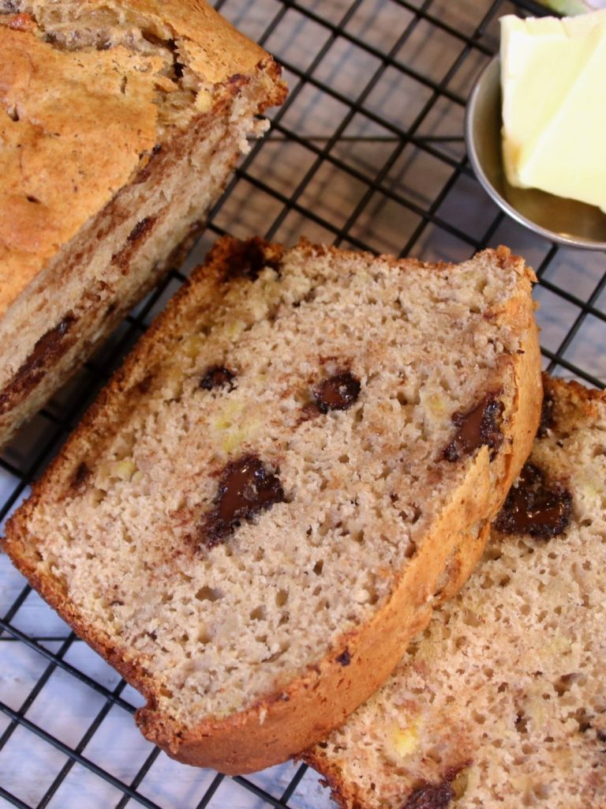

3 ingredient banana cake mix loaf
3 ingredient banana cake mix loaf is out of this world. It’s hard to believe that anything so good can come from 3 simple ingredients. Ironically enough, I tired it out at a social function the other day and responses were incredible. People actually thought that I had spend hours slaving over a hot stove and oven. Of course when I told them the truth, their jaws dropped.
It is made with ripe bananas, eggs, and the cake mix of your choice. It doesn't get much simpler. Most will think it's a recipe that your grandmother passed down.
Ingredients
- 3 large ripe bananas
- 2 large eggs
- 432 grams cake mix
- 1 cup semi-sweet chocolate chips
Recipe
- Add the bananas to a mixing bowl. Using a fork or potato masher, mash them up until they are smooth and creamy.
- Add in the eggs and fold with a spatula. Then, add in the cake mix and fold once again. Lastly, place the chocolate chips in and fold once more.
- Coat a loaf pan with baking spray or melted butter. Line the bottom with parchment paper. Pour the cake mix in until it's about 3/4 full.
- Place in a 350 degree F or 180 C preheated oven for 45 to 50 minutes until an inserted tooth pick comes out clean.
- Place the loaf on a wire rack and allow it to cool for a few minutes. Remove the loaf from the pan, slice, and serve.
- Enjoy your banana cake mix loaf!
